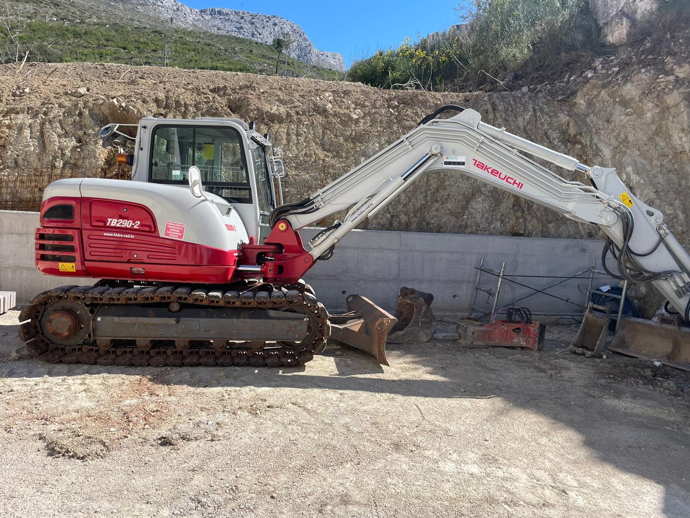
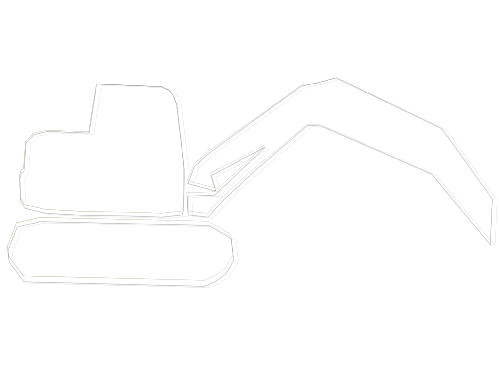
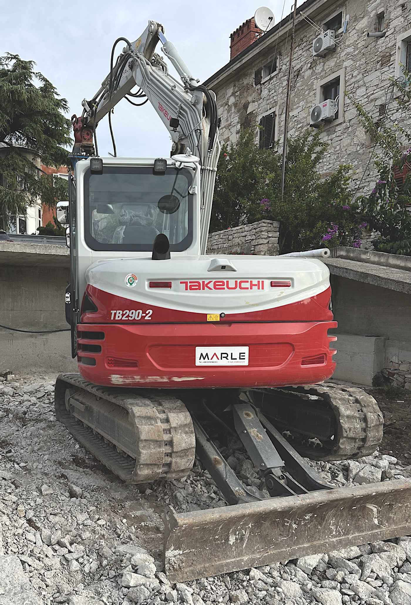

Iskopi za temelje
Trakasti temelji, priprema za ploču, nivelacija terena.
Radimo iskope za temelje, bazene, septičke jame, odvoz materijala i pripremu gradilišta. Područje: Pula + 30 km.
Trakasti temelji, priprema za ploču, nivelacija terena.
Iskop, odvoz, priprema podloge i pristup gradilištu.
Utovar i odvoz viška zemlje/šute, dovoz tampona.
Čišćenje terena, ravnanje, pristupni put, tamponiranje.
Za ovaj dio projekta izrađena je vektorska grafika korištenjem programa Inkscape. Bitmap fotografija bagera pretvorena je u vektorski obris pomoću alata Trace Bitmap, a zatim je korištena maska (clip) kako bi se ispuna prikazivala unutar oblika objekta.


Za izradu vektorske grafike korišten je program Inkscape. Kao polazna točka korištena je fotografija bagera, koja je poslužila kao podloga za izradu vektorskog oblika.
Fotografija je uvezena u projekt i smještena u donji sloj, uz smanjenu neprozirnost, kako bi se lakše pratio obris tijekom rada. Obris bagera izrađen je ručno pomoću Bezier (Pen) alata, pri čemu su dodavane i prilagođavane točke kako bi se dobio što jednostavniji i čišći oblik.
Dobiveni obris korišten je kao maska (clip), tako da se ispuna i pozadina prikazuju samo unutar oblika bagera. Na kraju je grafika izvezena u PNG format za korištenje na web stranici, dok je izvorna datoteka spremljena u SVG formatu.

Obrađena fotografija bagera (GIMP)
Fotografija je obrađena u programu GIMP. Prvo je izvršeno kadriranje slike kako bi se uklonili nepotrebni dijelovi pozadine i naglasio glavni objekt – bager u radu. Zatim je korišten alat Levels za poboljšanje kontrasta i vidljivosti detalja. Po potrebi je dodatno prilagođena svjetlina i kontrast slike. Slika je potom blago izoštrena pomoću filtra Unsharp Mask. Na kraju je slika skalirana na širinu od 1400 px i izvezena u JPG formatu, optimiziranom za web prikaz.